The complete staff guide to running the Ethasfish portal — from recording a harvest
on the cages, through outlet stock and the point of sale, to customer credit and
settlements. Every screen in this book is a real capture of the live system.
Audience
Sales & Admin staff
Version
1.0 — 2026
Screens
15 live captures
Confidential — internal usePage 1
Ethasfish FarmsContents
What's inside
Contents
Nine sections follow the flow of a working day: open the portal, take stock, sell, settle credit, and manage the storefront that customers see.
How to use this manual. Each section opens with what the screen is for, then a
numbered walkthrough, then a full-width capture of the real interface. Follow the
numbers on the page — they match the fields on the screen.
Operations Manual · v1.0Page 2
Ethasfish FarmsWelcome
00
One system, the whole business.
Ethasfish Farms runs on a single portal. The fish counted on the cages this morning are the
same stock the outlet sells this afternoon, the same products the online shop offers tonight —
and the same balances the credit ledger tracks when a customer pays later. Nothing is entered twice.
For sales staff. You will live in three places: Stock (harvest, send-out, outlet sales), Point of Sale (counter orders and receipts), and Orders (following up and taking payment).
For admins. Everything above, plus products and pricing, credit, purchasing, accounting, the media library and the website content your customers browse.
Sign in once. The portal uses your staff account. If you can see the Dashboard with
today's numbers, you are signed in and everything below is live data — not a demo.
Operations Manual · v1.0Page 3
01 · Getting startedDashboard
Section 01
The dashboard — your morning brief
Open the portal and you land here. Four tiles tell you the state of the business before you
touch anything: how many orders exist, how many are still pending, what has taken in this
month, and how many products are live. Below them, the eight most recent orders.
Total Orders — every order ever placed, online and at the counter.
Pending — orders awaiting fulfilment. Anything here needs attention today.
This Month — cash actually received this calendar month (paid orders only).
Active Products — items currently visible and sellable.
Start every shift here. Glance at Pending, then check the Credit tile in the sidebar if you have debtors — before you start selling.
ethasfish.co.ke/admin — Dashboard
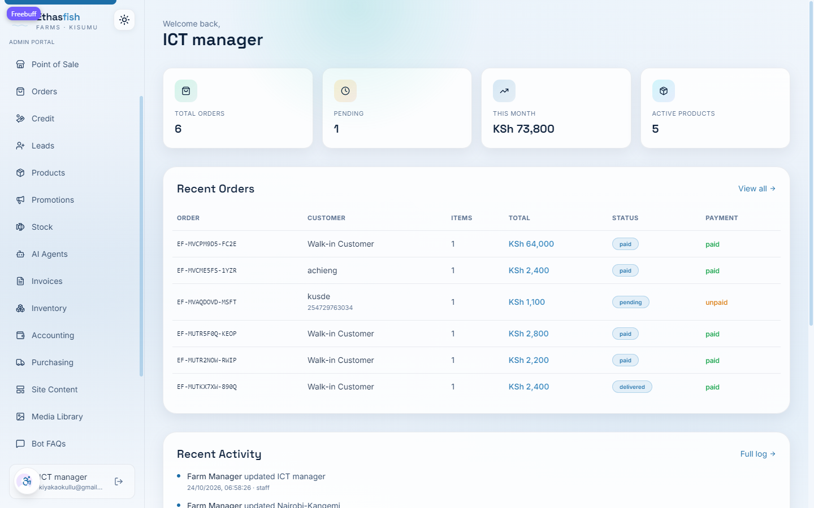
Getting startedPage 4
02 · Stock takingHarvest
Section 02
Stock taking — from the cage to the counter
The Stock page is the heartbeat of the operation. Fish are harvested from numbered cages,
ponds or the hatchery, sent out to an outlet, and sold at that outlet. Every harvest is
counted in pieces and weighed in kilograms — both are required, so the average weight
stays honest and missing figures can be derived.
Record Harvest. Pick cage / pond / hatchery, enter the number, the kg on the scales, save.
Send to Outlet. Move stock from farm balance to an outlet. Fill either field; the rest derives.
Record Sale. Log what an outlet sold and the cash taken. Stock can't go negative.
/admin/stock — Record Harvest
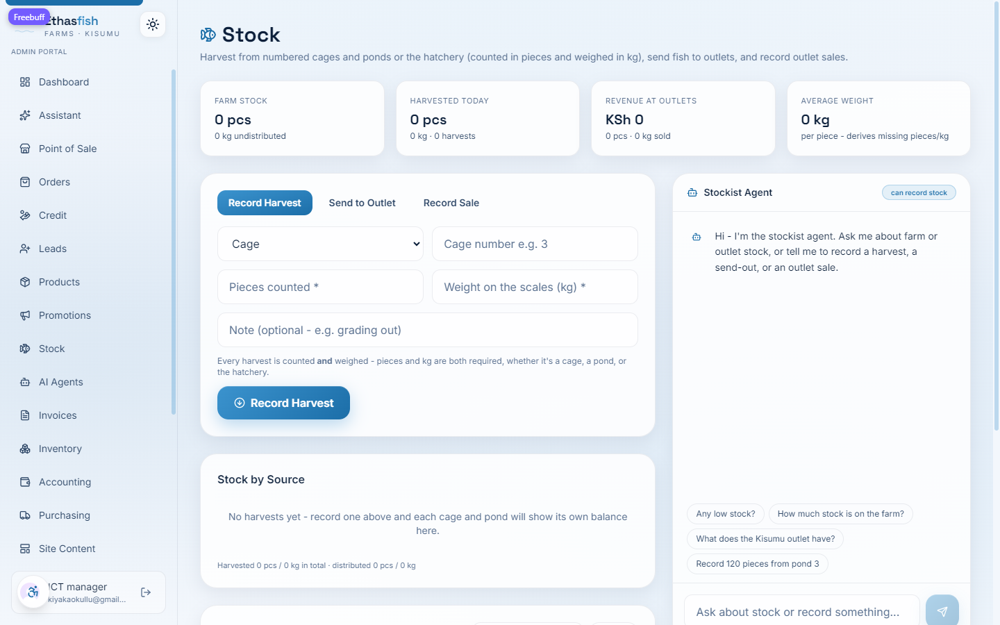
Stock takingPage 5
02 · Stock takingSend-out & sales
Section 02 · continued
Sending stock out & recording outlet sales
The snapshot tiles at the top of the Stock page update live: farm stock on hand, what was
harvested today, revenue collected at outlets, and the current average weight per piece.
Below the forms, Stock by Source keeps a running balance for each cage and pond, and
the Outlets cards show what each location holds, has sold, and where the low-stock
alert sits.
Open Send to Outlet, choose the destination, enter pieces and/or kg, save. Farm stock falls, outlet stock rises.
Open Record Sale, pick the outlet and a channel (counter, wholesale, mobile, market), enter what sold and the cash taken.
Set each outlet's low-stock alert (admin) so you are warned before a location runs dry.
/admin/stock — Send to Outlet
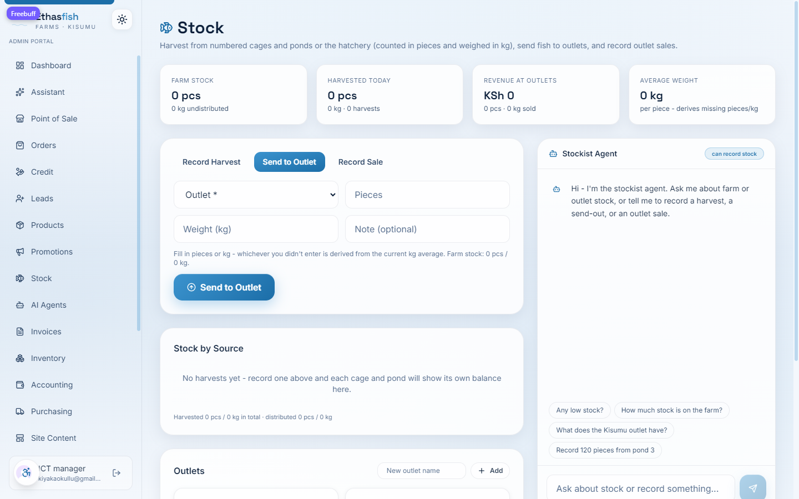
/admin/stock — Record Sale
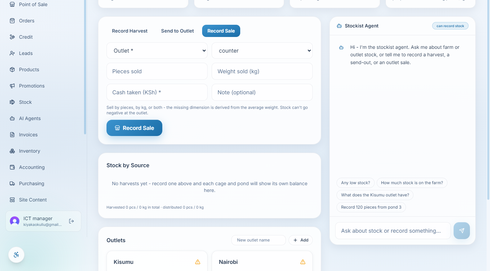
Stock takingPage 6
03 · Stockist assistantChat
Section 03
The stockist agent — stock by conversation
On the right of the Stock page sits the stockist agent. Ask it anything about stock, or tell
it to record something, in plain language. It reads the same live balances you see, and it
has permission to write harvests, send-outs and outlet sales — so you can keep working
without leaving the conversation.
Try one of these
“Any low stock?” — lists outlets under their alert threshold.
“How much stock is on the farm?” — the undistributed balance in pieces and kg.
“What does the Kisumu outlet have?” — one outlet's on-hand position.
“Record 120 pieces from pond 3” — writes the harvest and refreshes every figure.
Check before you trust. Anything the agent records shows up immediately in Stock by Source and the outlet cards — give it a glance to confirm it heard you right.
Why it matters. Hands wet, scale busy, phone ringing — typing a sentence is faster than hunting through three tabs. The agent does the navigating for you.
Stockist assistantPage 7
04 · Point of saleCounter
Section 04
Point of sale — ringing up a counter order
The POS is built for speed at the counter. Products appear as a grid of tiles with their live
price and variant. Tap to add to the cart, adjust quantities, and check out — the sale writes
an order, updates stock, and can print or send a receipt in one move.
Find the product. Tap its tile to drop one into the cart; tap again or use the stepper for more.
Pick a variant. Whole fish by size, fillets, fingerlings by pack — each carries its own price.
Check out. Choose how the customer is paying: cash, M-Pesa, or Credit (see Section 05).
/admin/pos — product grid
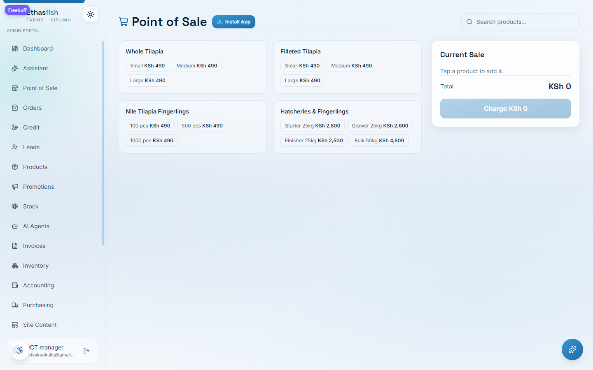
Point of salePage 8
04 · Point of saleCredit at the till
Section 04 · continued
Selling on credit at the counter
Some regulars take fish today and pay when the week's money lands. Choose Credit at
checkout and the modal asks for what the ledger needs later: the customer's name and
phone, and a due date by which they promise to settle. All three are required —
an incomplete credit sale cannot slip through.
Never fudge the due date. It drives the overdue flag on the Orders and Credit pages. If a customer asks for more time, agree it, then update the order — don't leave the original promise blank.
/admin/pos — checkout with Credit selected
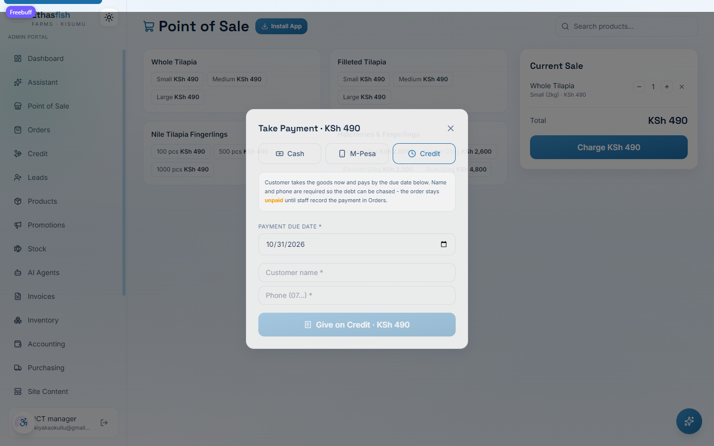
Point of salePage 9
05 · CreditLedger
Section 05
Credit ledger — who owes what
The Credit page turns every unpaid credit order into a per-customer balance. Three tiles across
the top give you the total owed, how much of it is overdue, and how many customers are
carrying a balance. Each customer row expands to the individual orders behind their number,
with the due date and days late spelled out.
Total owed — every shilling still outstanding across all credit customers.
Overdue — the portion past its due date. Shown in red; chase these first.
Customers owing — how many people to follow up with today.
Expand a row — see each order, its due date, and record a part-payment or full settlement.
/admin/credit — ledger with live totals
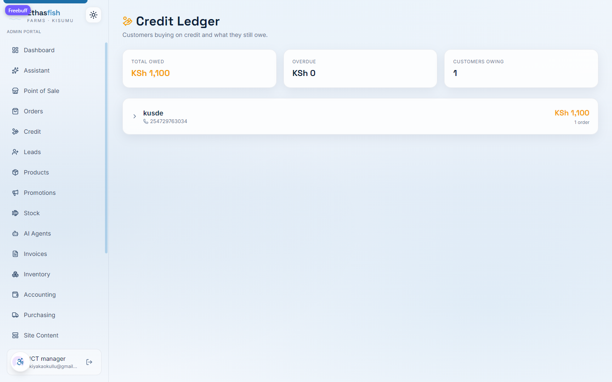
CreditPage 10
05 · CreditRecording payment
Section 05 · continued
Recording a payment against a debt
When money comes in — full or part — open the customer, hit Record Payment, and enter
the amount. Choose how they paid (cash, M-Pesa, bank, mobile) and paste the reference code if
there is one. A partial payment chips away at the balance; when the last shilling lands the
order flips to Settled in full and drops off the owing list.
Always take the reference. An M-Pesa code takes ten seconds to note and settles a "I already paid" conversation instantly.
/admin/credit — expanded customer with Record Payment
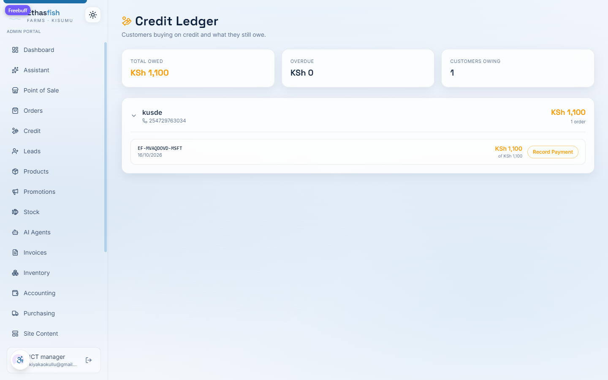
CreditPage 11
06 · OrdersFulfilment
Section 06
Orders — the fulfilment queue
Every order, wherever it came from, lands in one list. A filter row lets you slice by status
(pending, delivered, cancelled) and by payment — paid, or Owed. Overdue credit
orders are ringed in red so a late payer never hides in the stack.
Work top-down. Oldest pending first — that's the fairest queue for customers.
Use the Owed filter to see everything bought on credit that hasn't been settled.
Record Payment inline from the order card — no need to visit the Credit page for a one-off.
/admin/orders — payment filters
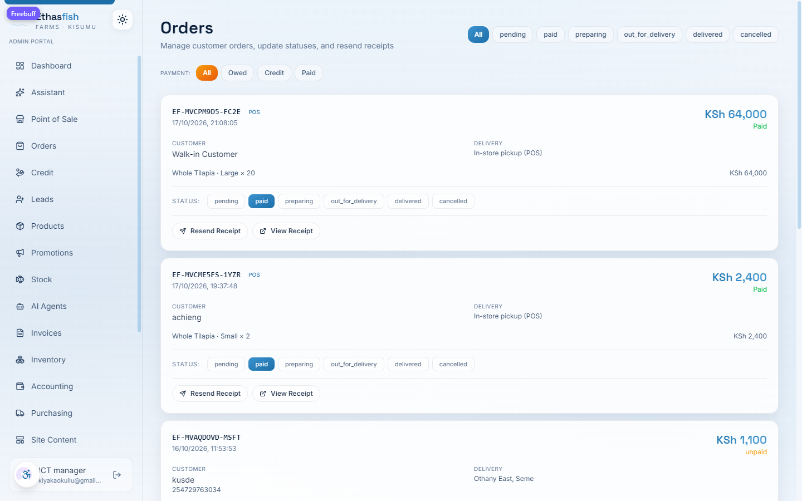
OrdersPage 12
06 · OrdersThe owed queue
Section 06 · continued
The Owed queue — credit, surfaced
Switch the payment filter to Owed and the list narrows to unsettled credit orders.
Each card carries an amber Record Payment (KSh … owed) button showing exactly how much
is outstanding, and an overdue order is ringed in red. Tapping the button opens a focused
modal — amount, method, reference — and returns you straight to the filtered list.
Chase, don't guess. The owed list is your call sheet. Ring from the top, note every promise in the reference field, and record payments the moment money arrives.
/admin/orders — Owed filter
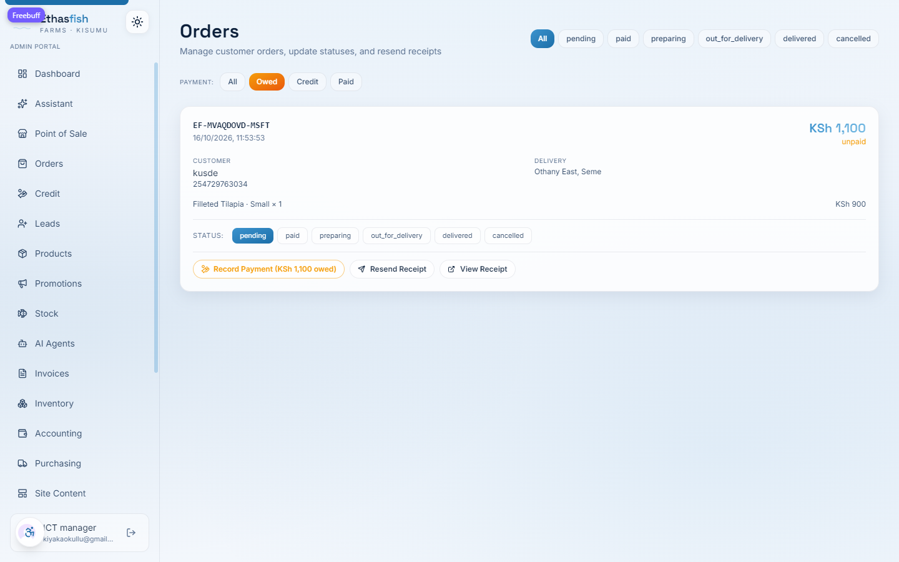
/admin/orders — Record Payment modal
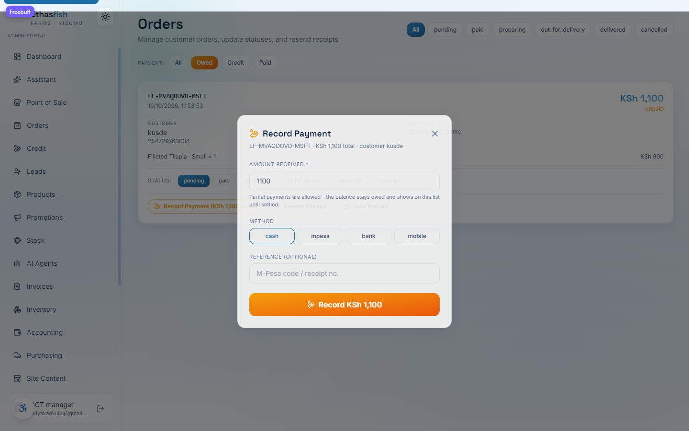
OrdersPage 13
07 · ProductsCatalogue
Section 07
Products — pricing, variants & stock
Products drives the shop, the POS tiles and what stock is tracked against. Each product carries
a description, its category, and one or more variants — sizes like Small / Medium / Large,
or pack counts for fingerlings — each with its own price. Toggle a product off and it
disappears from the storefront without deleting its history.
Price a variant by editing its amount; the shop and POS pick it up immediately.
Set stock per variant so a sold-out size stops taking orders online.
Add a variant when you introduce a new size or pack — no code needed.
/admin/products — variants & stock
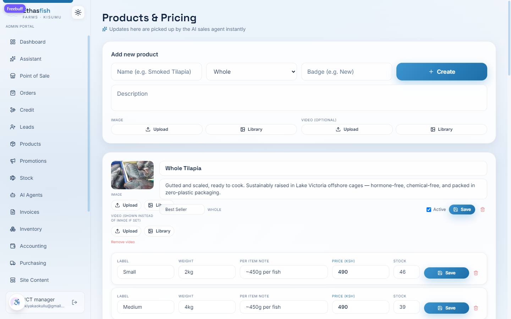
ProductsPage 14
08 · Site contentCMS
Section 08
Site content — the storefront in your hands
The public website is not a separate thing to ask a developer about. The Site Content editor
lets an admin change the words, banners and imagery customers see — the hero headline, the
promotional strip, service descriptions — and publish. Media lives in the Media Library,
so photos uploaded once can be reused across pages.
Think before you publish. Changes go live to every visitor. Preview the wording, check spelling, then save — and remember the same content powers the mobile site.
/admin/content — CMS editor
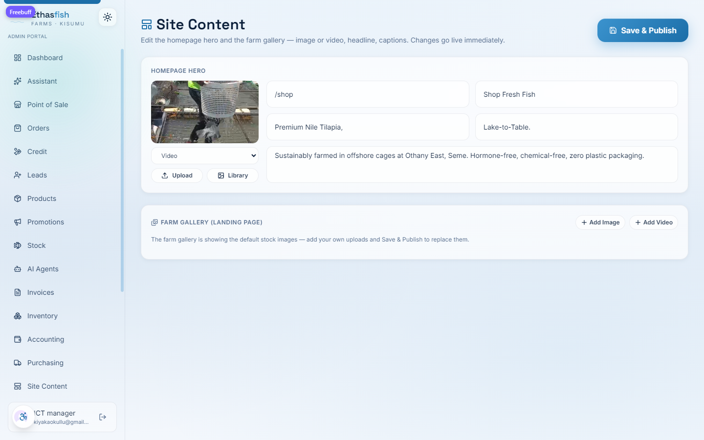
Site contentPage 15
09 · StorefrontCustomer view
Section 09
The storefront — what your customer sees
All your work lands here. The public site opens on a hero that sells Lake-to-Table tilapia,
then flows into a shop grid of live products with category filters — whole fish, fillets,
fingerlings, feed, consultancy. Customers pay by M-Pesa or request a quote, and their order
drops straight into the same queue you fulfil.
/ — landing page
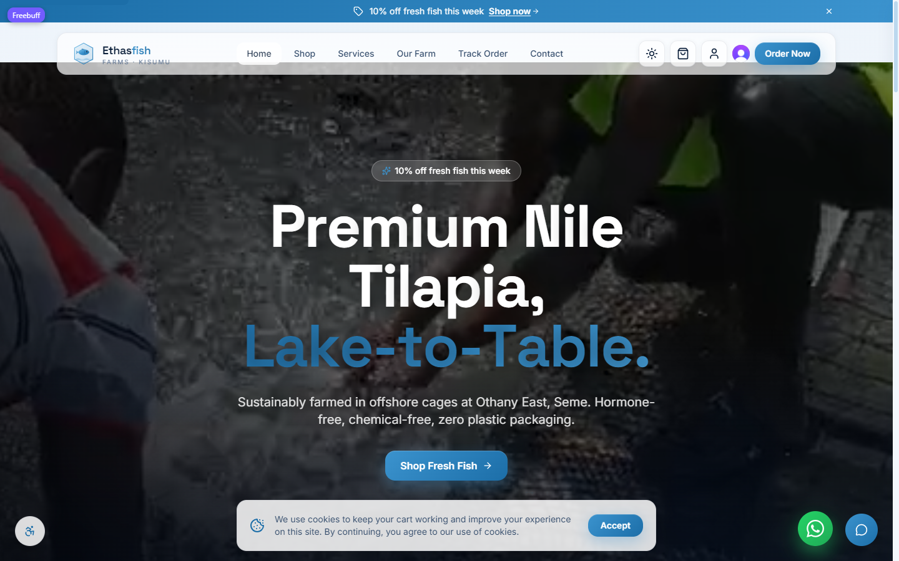
/shop — live catalogue
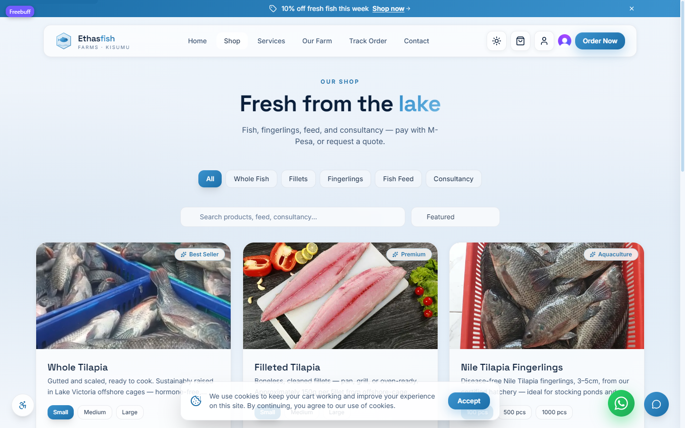
StorefrontPage 16
09 · StorefrontDaily checklist
Wrap-up
The daily close — a five-minute routine
Run this at the end of every trading day. It takes five minutes and it is the difference
between a business you can trust and a spreadsheet you can't.
Record every harvest from the day — cages, ponds, hatchery.
Send-out balances match what physically left for each outlet.
Every outlet sale logged with its cash taken.
POS orders closed out; no stray open carts.
Owed queue reviewed; payments recorded as they came in.
Overdue credit chased — a call or an M-Pesa request.
Low-stock alerts cleared or restock planned.
Site content checked if a promo or price changed today.
When something looks wrong. The Activity Log records who changed what, and when. If a
number doesn't reconcile, start there before you re-enter anything.